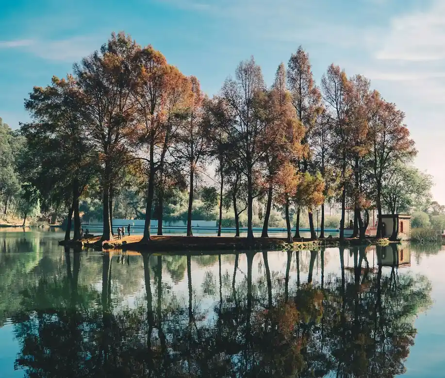


Gardens with a sense of place.
Fifteen gardens, each shaped by its own light, soil and story. Open any project to walk through the brief, the build and the planting that followed.
4.9 / 5 · 18 RHS medals & counting
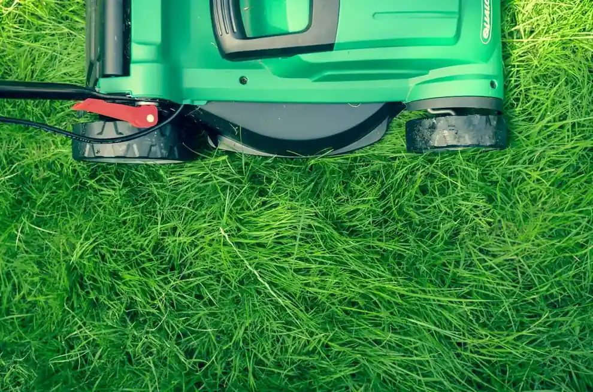
Find a garden that speaks to you.
Filter by type, then open a project for the full story. Every garden is private — shared here with our clients' kind permission.

The Willow House
Walled garden, long views and a new stone spine. Our most complete estate transformation to date.

Hidcote Courtyard
Shade, scent and enclosure.

The Long Border
A slow procession of colour.

Meadow House
Less lawn, more life.

The Glasshouse Garden
A potager with appetite.
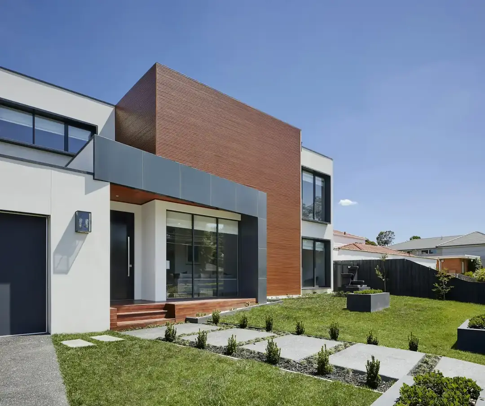
Chelsea Courtyard
Borrowed light, borrowed green.
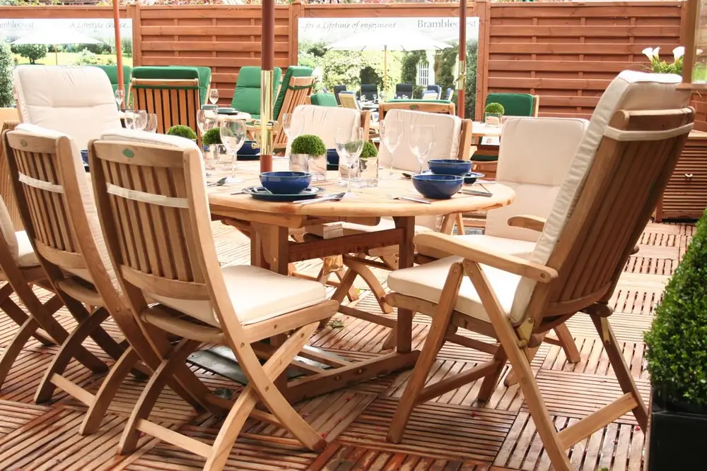
The Garden Deck
A small courtyard with a long evening.

The Heritage Walk
Restoring a lost garden axis.
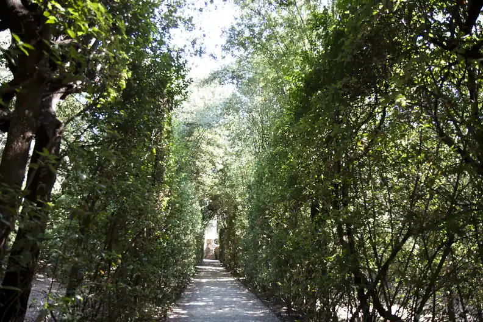
The Lime Avenue
A lost approach, restored in green.

Spring Parterre
Formality, softened by bulbs.
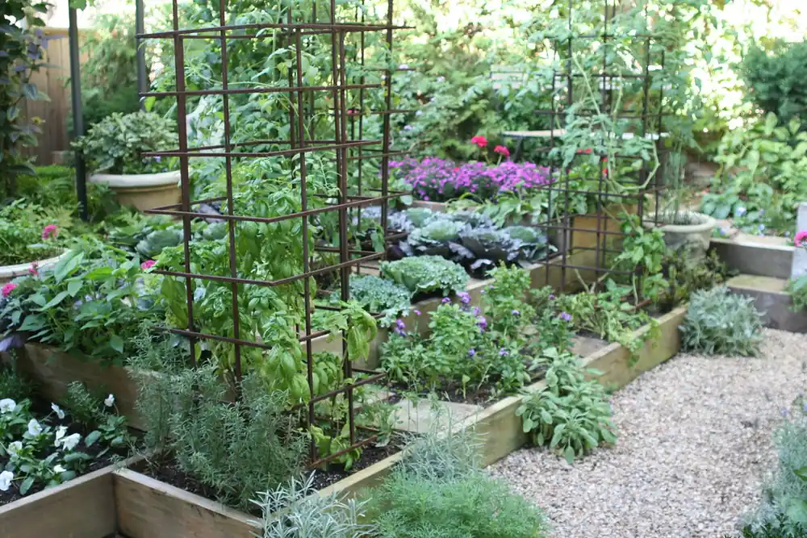
The Kitchen Garden
Beauty you can eat.
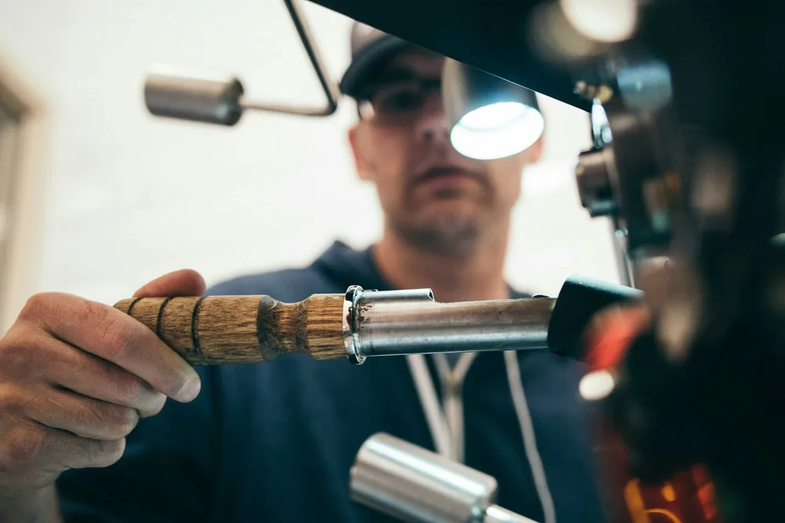
The Cutting Garden
Flowers for the house, and the village.

The Wildflower Field
From paddock to pollinator habitat.
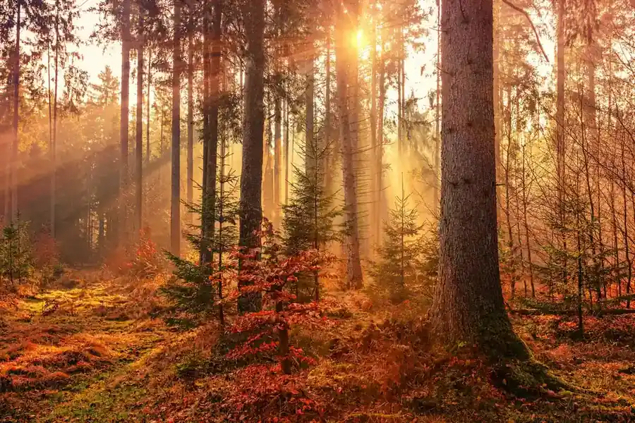
The Orchard Meadow
Light, fruit and a little wildness.

The Green Room
Shade, scent and summer shelter.
Try another filter, or tell us what you are looking for — we may have the perfect reference.
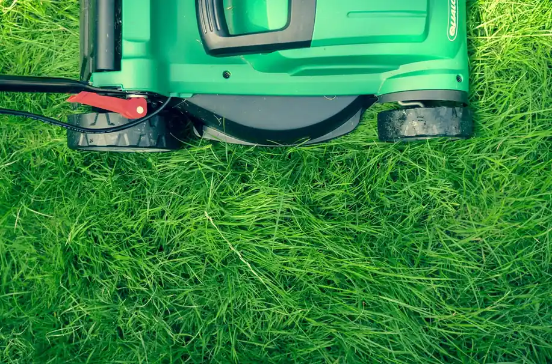
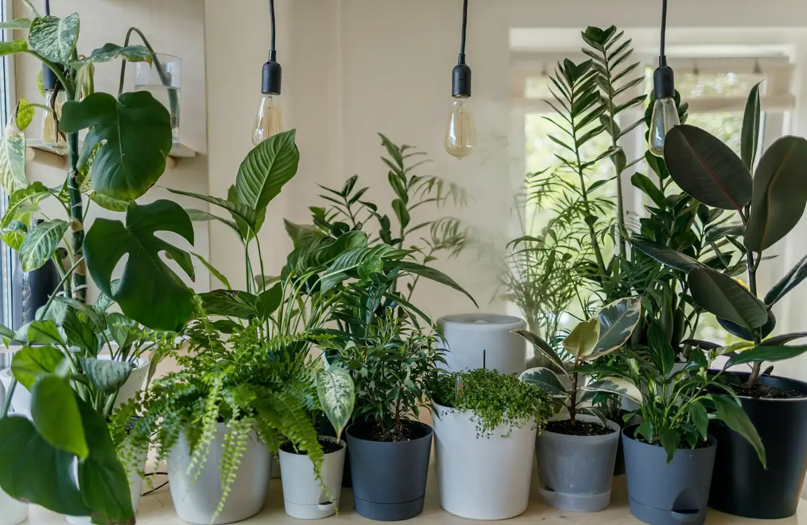
The garden that waited for its trees.
At the Willow House, the hardest decision was the slowest: to keep the ancient pear walk and design everything else around it.
The new terraces step down to meet the old orchard rather than cutting through it. Stone was quarried locally, the yew was grown in our nursery for six years, and the borders were planted in three stages so the garden never looked newly born.
- Retained: 34 mature trees, 180m of ancient hedge.
- Planted: 2,400 perennials, 18,000 bulbs, 60 trees.
- Aftercare: a permanent two-gardener plan.
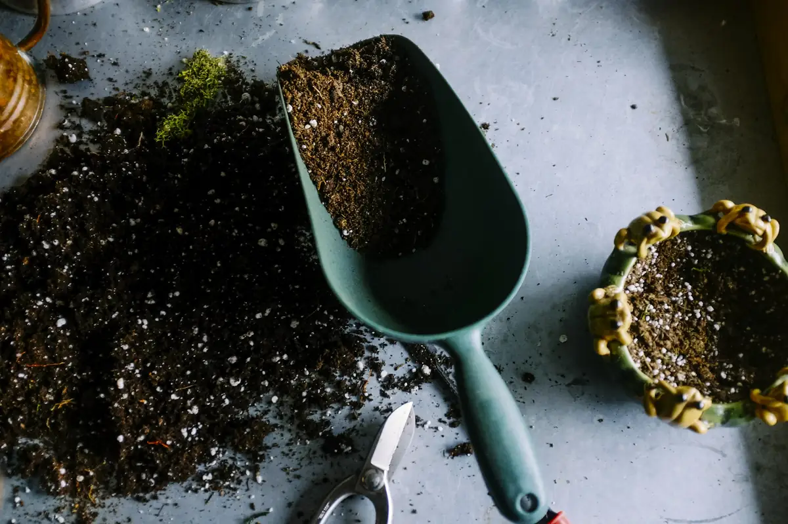
Every project begins with a walk.
Show us the site, the light and the life you want outdoors. We will bring the sketchbook.